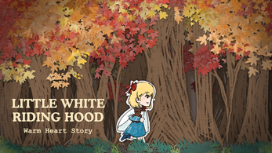
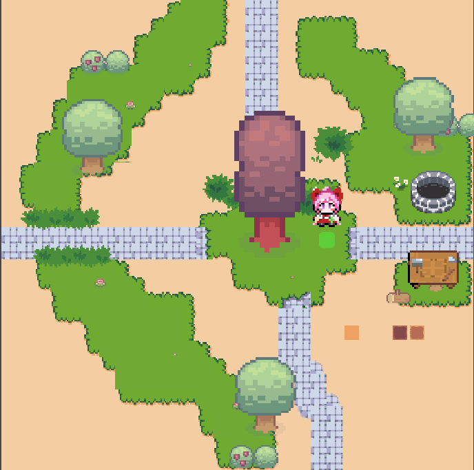
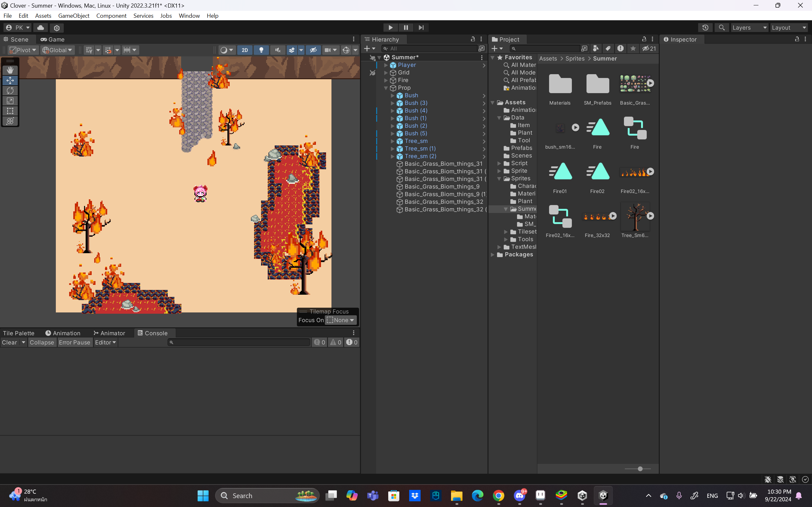
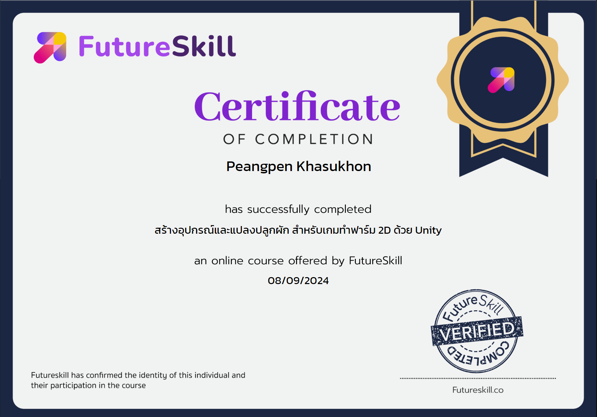
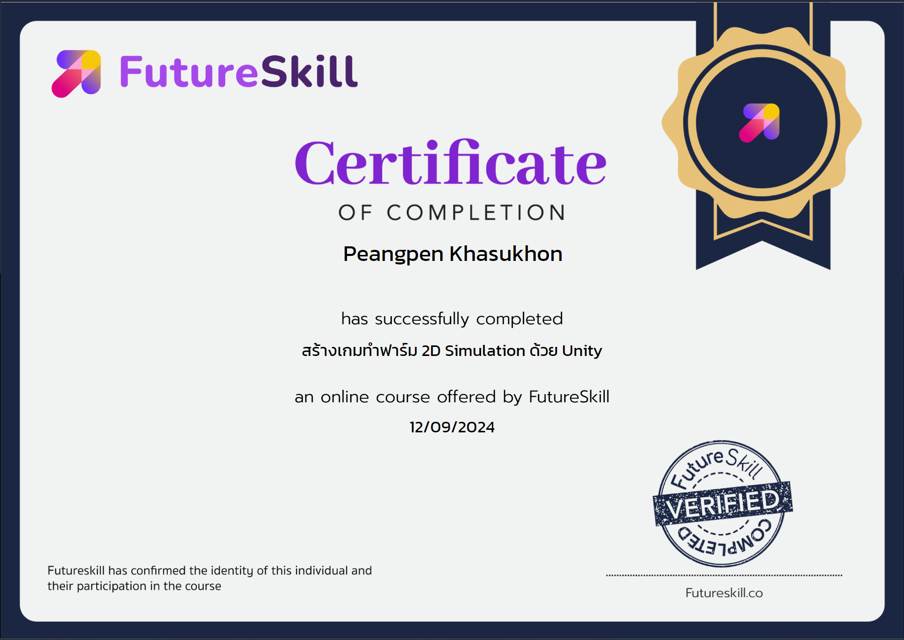

รายการโปรเจ็คที่ผ่านมา:
รายละเอียด: เกมประเภท Horror
รายละเอียด: เกมประเภท RPG Farming
 รายการโปรเจ็คที่เรียนจบและได้รับประกาศณียบัตรที่ผ่านมา:
Click here to FutureSkill Websiteรายละเอียด: สามารถสร้างเครื่องมือต่าง ๆ ที่ใช้ในการปลูกผัก และใช้ Command Pattern เพื่อสำหรับใช้อุปกรณ์ต่าง ๆ ได้
สามารถสร้างพื้นดินสำหรับปลูกผัก/รดน้ำได้
Certificate :
รายละเอียด: ได้รับมุมมองและแรงบันดาลใจจากการพัฒนาเกม Stardew Valley และอยากที่จะเริ่มต้นพัฒนาเกมของตนเอง
ปูพื้นฐานโปรแกรม Unity และภาษา C# สำหรับการสร้างเกม Farm Simulation 2 มิติ
เข้าใจหลักการทำงานของโปรแกรมและฟีเจอร์ต่าง ๆ ของโปรแกรม Unity สำหรับการสร้างเกม Farm Simulation 2 มิติ เบื้องต้น
Certificate :
